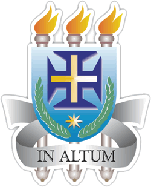

Operações com Vetores
packages = ["numpy", "matplotlib"]
← Voltar

Operações com Vetores
Insira os componentes dos dois vetores:
Vetor 1
X:
Y:
Vetor 2
X:
Y:
Escolha a operação vetorial desejada:
Calcular Soma Vetorial
Calcular Subtração Vetorial
Calcular Produto Escalar
Calcular Produto Vetorial
Visualização Gráfica:
Resultado:
--